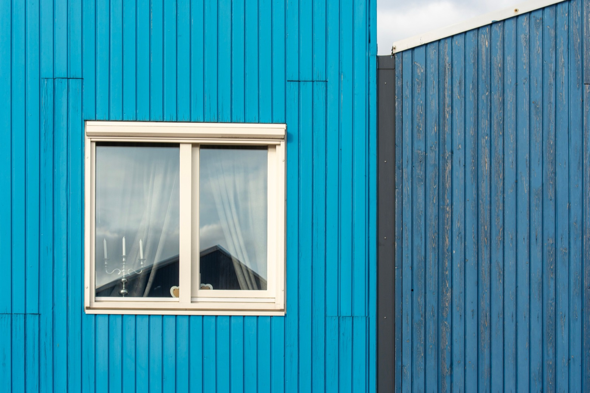

SIP Homes (Structural Insulated Panels)
Foam-core sandwich panels that are structure and insulation in one, a fast, super-efficient shell, with real cautions for the humid, termite-heavy tropics.

- A SIP is foam sandwiched between two boards. One panel does the job of frame, sheathing and insulation at once.
- The shell goes up in days, not weeks, and the finished envelope is exceptionally airtight.
- A 4-inch SIP at R-14 outperforms a 2x6 stud wall at R-19, because there are no studs conducting heat straight through the wall.
- The skins are usually OSB. Which is wood. In a climate whose two hobbies are humidity and termites.
- Our verdict for Panama and Costa Rica: buildable with meticulous detailing, but ICF gives you the same comfort with none of the anxiety.
A SIP is a rigid foam core bonded between two structural boards, usually OSB. One panel is wall, structure and insulation at the same time. Houses built this way go up remarkably fast and perform beautifully in cold climates. Whether they belong in a hot wet one is a different question, and this guide gives you a straight answer on it.
What building them involves
Panels are cut to size in a factory, trucked to the site, and lifted into place as walls and roof sections, joined along splines. Because each panel arrives as structure and insulation together, a small crew can close in a weathertight shell in days.
Two things you should budget for that the brochures underplay. You will need a crane, even on a single-storey house, to set roof panels. And you will need a builder who has done it before, because the panels are cut from drawings and an error found on site is expensive to fix. Factory tolerances are far tighter than stick framing, which is a benefit right up until the moment the drawing was wrong.
The price
Panels alone run roughly $5 to $7 per square foot depending on thickness. Delivered and built, a SIP house lands around $120 to $200 per square foot, a premium over stick framing that the build speed and the energy bills claw back over time.
The variables that actually move the number are core material, panel thickness, roof geometry and shipping. That last one matters enormously outside North America. Panels are large, light and awkward, which is the worst possible combination for freight cost.
Why a thin SIP beats a thick stud wall
Here is the counterintuitive bit that makes SIPs worth understanding even if you never build one.
Insulation is rated by R-value, and more is better. A 2x6 stud wall packed with fibreglass rates around R-19. A four-inch SIP rates about R-14. On paper the stud wall wins comfortably.
In whole-wall testing at Oak Ridge National Laboratory, the SIP wins. The reason is the studs. Every stud is a piece of wood running straight through your insulation from inside to outside, and wood conducts heat far better than fibreglass does. A stud wall is a grid of small thermal leaks that the R-19 label never mentions. A SIP has almost no framing in it, so the number on the label is close to the number you get.
If you do build with SIPs, the core material is the biggest lever you have:
Strengths and weaknesses
| Factor | Rating | Notes |
|---|---|---|
| Cost | 🟡 | Premium over stick-frame; faster shell |
| Build speed | 🟢 | Weather-tight in days |
| Energy efficiency | 🟢 | Airtight, high insulation |
| DIY-friendly | 🟡 | Needs crane + sealing discipline |
| Heat/climate fit | 🟡 | Great insulation, but airtightness needs ventilation planning |
| Moisture/termite | 🔴 | OSB skin vulnerable to humidity + termites if breached |
| Seismic/wind | 🟢 | Strong panels, good connections |
| Permitting/finance | 🟡 | Understood in North America; less so locally |
Does it suit a tropical build?
SIPs are a cold-climate product that became a warm-climate curiosity, and the reason is sitting in the panel itself.
Those structural skins are OSB. OSB is wood chips and resin. Panama offers wood chips and resin two things in abundance: airborne moisture for most of the year, and termites that will find anything cellulose you leave in the ground's general direction. If moisture gets past a seal into the core, or termites reach a skin, the damage happens inside a sealed panel where you cannot see it until something sags.
The failures, when they happen, are almost never the panel. They are the joints. Sealing the spline connections and getting the vapour detailing right is the whole discipline, and it demands a builder who has done it in a humid climate specifically, not one who has done it in Colorado.
Two more tropical wrinkles. An airtight house in a humid climate must have mechanical ventilation, or the moisture you generate by breathing and showering has nowhere to go; in this climate that means an ERV rather than the HRV a cold-climate builder would specify. And alternative skins exist for exactly this problem, with magnesium oxide board being the usual answer, at a price and a lead time.
Our position, plainly: it can be done well, and we have seen it done well. But you are spending extra money and extra vigilance to manage a risk that a different method simply does not have. If what you want is a cool, airtight, efficient house here, ICF gets you there with a concrete core that termites cannot eat and humidity cannot rot. Compare the whole field in our building methods index.
Set on panels? Let's pressure-test it.
If a SIP build is what you want, the questions worth asking are about skins, splines and ventilation, not price per panel. Send us the plot and the plan and we will tell you honestly whether we would build it that way, and what we would build instead.
See 2026 build costs in Panama →Frequently asked questions
Are SIP homes energy efficient?
Very, the continuous foam core makes them airtight and highly insulated, which is why they're popular in cold and hot-dry climates for slashing heating and cooling bills.
Do SIPs work in humid tropical climates?
They can, but with caution. The structural skins are usually OSB (wood), which is vulnerable to tropical humidity and termites. Meticulous moisture detailing, treated or alternative skins, and pest control are essential, many tropical builders prefer insulated concrete instead.
Why does a thinner SIP beat a thicker stud wall?
Studs. Every stud in a framed wall is a length of wood running from the inside face to the outside face, conducting heat straight past your insulation. Whole-wall testing at Oak Ridge found a 4-inch SIP rated R-14 outperforms a 2x6 stud wall rated R-19, because the SIP has almost no framing to leak through.
SIP vs ICF for the tropics, which is better?
For a hot, humid, termite-heavy climate, ICF is generally the safer choice: it delivers comparable insulation and comfort with a concrete core that resists moisture, termites, fire, and storms, whereas SIPs rely on a wood skin that the tropics can attack.
Sources & verification
Figures in this guide were checked against industry and laboratory sources on 3 September 2026. Immigration, tax, and cost figures change, so always confirm the current rules with the official body or a licensed professional before acting.
- Rise, SIP core materials, R-values and panel pricing
- Oak Ridge National Laboratory, whole-wall R-value research on thermal bridging
- APA, structural insulated panel product guide